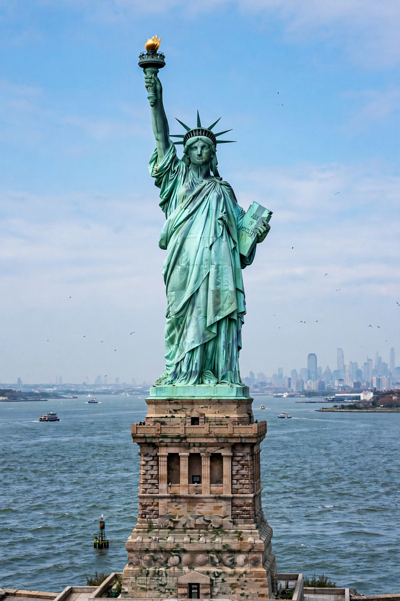

| Statue of Liberty | |
|---|---|
 | |
| Location | Liberty Island, New York Harbor |
| Designer | Frédéric Auguste Bartholdi; structure by Gustave Eiffel |
| Height | 93 m (ground to torch); statue 46 m |
| Dedicated | October 28, 1886 |
| Material | Copper sheeting on iron armature |
The Statue of Liberty (Liberty Enlightening the World; French: La Liberté éclairant le monde) is a colossal neoclassical sculpture on Liberty Island in New York Harbor. A gift from the people of France to the United States, it was designed by sculptor Frédéric Auguste Bartholdi, with an internal iron framework engineered by Gustave Eiffel, and dedicated on October 28, 1886.
The statue depicts Libertas, the Roman goddess of liberty, robed and crowned with seven rays representing the seven seas and continents. She holds a torch in her raised right hand and a tablet inscribed with the date of American independence (JULY IV MDCCLXXVI) in her left; a broken chain lies at her feet. The copper skin, hammered into shape over wooden forms in Paris, has weathered to its famous green patina. Fundraising for the pedestal in America was famously rescued by Joseph Pulitzer's newspaper campaign, and Emma Lazarus's sonnet "The New Colossus" (1883) — "Give me your tired, your poor, your huddled masses yearning to breathe free" — was later mounted inside the pedestal, binding the statue to the immigrant story.
The idea was proposed by French historian Édouard de Laboulaye in 1865 to honour American independence and abolition. Shipped from France in 350 pieces aboard the Isère, the statue was assembled on its pedestal — built within the star-shaped Fort Wood — in 1886. It served as a functioning lighthouse until 1902, became a national monument in 1924, and was restored for its centennial in 1986. It is administered by the National Park Service and, with Ellis Island, inscribed as a UNESCO World Heritage Site.